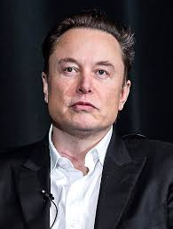

Профил
Елън Мъск (роден на 28 юни 1971 г.) е бизнес магнат, индустриален дизайнер и инженер...
Образование
Мъск е завършил Университета на Пенсилвания с дипломи по икономика и физика.
Постижения
Мъск е най-дълго управляващият изпълнителен директор на производител на автомобили в света...
Медия
Видео
Информация
| Свойство | Информация |
|---|---|
| Име | Елън Мъск |
| Дата на раждане | 28 юни 1971 г. |
| Националност | Южноафриканска, канадска, американска |
| Образование | Университет на Пенсилвания |
| Длъжности | Изпълнителен директор на SpaceX, Изпълнителен директор на Tesla Inc., Основател на The Boring Company, Съосновател на Neuralink, Съосновател на OpenAI |
| Съпруга | Талула Райли (бр. 2010–2012, бр. 2013–2016), Джъстин Мъск (бр. 2000–2008) |
| Деца | 7 (включително X Æ A-12 Мъск) |
| Стойност на имуществото | 300 милиарда щатски долара (април 2024 г.) |
| Известен със | SpaceX, Tesla, Inc., Neuralink, The Boring Company |
| Книги | “Елън Мъск: Tesla, SpaceX и Търсенето на Фантастично Бъдеще”, “Как да Строим Бъдещето”, “Иновационните Тайни на Стив Джобс” |
| Награди | Златен медал на Международната астронавтическа федерация за 2014 г., Златен медал на Ломоносов за 2019 г. и много други. |